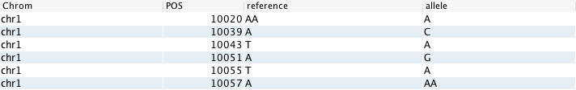

GOR and NOR¶
The GOR command is the primary source command in the GOR query language (along with the NOR command).
Genomic Order¶
There are two main types of relations that can be used in the GOR Query Language: genomic-ordered and non-ordered. Genomic-ordered relations have the chromosome and position in the first two columns. They should be sorted in order of the chromosome (1 through to 22, followed by X and Y - and in some cases “M”, for mitochrondrial DNA) and then, within each chromosome, numerically on the position.
If this condition is not met in a GOR file, it can lead to incorrect seeking when a genomic range is fetched. Compressed GOR files generated with the WRITE command are guaranteed to be correctly ordered. Plain TSV-like GOR files created with other software tools may not. To verify the order use VERIFYORDER and to fix the order use SORT genome.
Non-ordered relations can be used with NOR, but whenever possible it is recommended to use GOR command since it allows for more efficient execution and many commands are only available in a GOR context.
What are streams?¶
Both GOR and NOR commands create a stream of rows. However, the stream from the GOR command is genomic ordered while there is no guarantee about ordering from the NOR command. When the stream can be assumed to ordered, the system can use that information to choose a very efficient implementation to execute various types of commands such as joins, aggregation, pivoting, etc.
A full explanation of the GOR command can be found here. The NOR command is described here.
Tip
You can run a query in the Sequence Miner by using the keyboard shortcut: ⌘+Enter on a Mac or CTRL+Enter on a PC.
Source Commands and Pipe Steps¶
There are two different types of commands that can be used in a GOR query:
Source commands start a GOR query and generate data that will be worked on in the query.
Pipe steps manipulate the data that is streamed from the source command or previous pipe step.
The first step in creating a GOR query is to determine the source of the stream you will be working with. In most cases this will either be genomic ordered relational data in the form of a GOR file or some non-ordered relational data that can be retrieved using the NOR command.
It is important to note that the type of source command defines the context for the subsequent pipe steps. Thus, the number of input parameters to the pipe step commands and which commands are available depends on the context. As an example, SORT and GROUP require binsize when working in a GOR context whereas they do not in the NOR context. Similarly, the JOIN command is only available in context of GOR whereas MULTIMAP must be used to perform a join in NOR.
Other Data Sources¶
It is also possible to retrieve data directly from the operating system or another database type using the GORCMD, NORCMD, GORSQL. or NORSQL commands. The prefix of their names specify GOR or NOR context for the subsequent commands. In some situations (and depending on the tools you are using to run the commands), you may need to white-list scripts before running them within these source commands.
gor <(nor chr1_data.tsv | SELECT position,colA,colB | CALC chrom 'chr1'
| SELECT chrom,position,colA,colB | SORT -c chrom,position:n)
| VERIFYORDER | write chr1_data.gorz
The above query shows an example where the GOR command is used to read a nested NOR query. In the nested query, the pipe steps are in a NOR context, thus is is possible to use a SELECT command where the first two columns are not (chrom,position). Similarly, the SORT command does not take a binsize. The VERIFYORDER command and the WRITE command are however in GOR context and the file chr1_data.gorz guaranteed to be in proper genomic order.
Note
Note here that the VERIFYORDER command is not required here, since it is implicit in the WRITE command.
Selecting By Position¶
It is possible to seek into a GOR stream based on the position. The GOR command has a position selection option (-p) that allows it to select a subset of data from a genomic ordered source. For example, if you want to limit your output to only chr10 in the #dbsnp# reference data, you would execute the following GOR query:
gor -p chr10 #dbsnp# | TOP 100
Note that the TOP command is used above to limit the number of rows returned to 100 for demonstration purposes since otherwise the result set would be around 11 million rows.
If you only wish to read positions 1000 to 2000 on chromosome 1 in the #dbsnp# reference file, you would write the following query:
gor -p chr1:1000-2000 #dbsnp#
Note that it is also possible to use the -p option for nested GOR queries, e.g.
gor -p chr7 <(gor file1.gorz | merge <(gor file2.gor | select 1-2,colA))
However, it is not possible to use the -p option on nested NOR queries. Thus the following is illegal:
gor -p chr7 <(norsql select * from sqltable1 )
Working with Multiple Files¶
We can add data from multiple sources at once by specifying multiple files in the GOR command if the files are identical (same number and order of columns in the data).
This will combine the data in the files. Unlike the cat command in Unix, the output is returned genomic-ordered.
It is possible to add a column to the output that indicates the source of each row in the output by using the -s option in the GOR query, as shown below:
gor fileA.gor fileB.gor -s Source
The GOR query above will combine the contents of the GOR files, return them genomic-ordered, and add a column to the output labelled “Source”, which will contain the source file name for each row in the output. This topic is investigated more thoroughly in a later chapter on Dictionary Tables.
Note
It comparing columns, the number and names of the columns must be the same, but the names are not case-sensitive.
It is not possible to use the GOR command on two files that do not have the same list of columns, thus it would therefore not be possible to have a GOR command like the command below since these two formats have different columns:
gor fileA.vcf fileB.bam
It is however always possible to merge two files using the MERGE command, e.g.:
gor fileA.vcf | merge fileB.bam
The above example is however not very meaningful and it would be difficult to recognize the rows from the variant file since the density of sequence read data is much higher. The following query could be a more meaningful example:
gor fileA.vcf | rename #10 Sample | merge <(gor fileb.vcf | rename #10 Sample)
Since the convention in VCF file is to name the 10th column according to the sample it represents, multiple VCF files to not represent the same type of relations. By using the RENAME command, we can harmonize the column names before the merge takes place.
Dictionary Tables¶
A dictionary table is any file (gord or gort) that contains references to multiple files of the same relational type, hence it is essentially a metadata table. Running a GOR query on a dictionary file will combine or the contents of the file and return a genomically ordered result set.
To illustrate this concept, consider the example of the #wgsvars# table, which contains all WGS variants within the project. The alias #wgsvars# is in fact a reference to a dictionary table, which, in turn, contains references to each of the compressed GOR files of variants for subjects in the project.
Note
Dictionaries can contain references to multiple files or they can be meta-dictionaries (i.e. references to multiple dictionaries).
Running a GOR query on #wgsvars# will give us a combined result from all the GOR files referenced within.
gor #wgsvars# | TOP 1000
Likewise, a NOR on the table will give us the variant, however, in a NOR context. Thus we can for example generate a list of the PNs from the first 1000 rows:
nor #wgsvars# | TOP 1000 | SELECT PN | DISTINCT
However, if we wish to see the meta-data contents of that file, we would use a NOR query, using the -asdict option to specify that we want to see the metadata:
nor -asdict #wgsvars#
This would show us the contents of the dictionary itself, rather than the GOR output. An example of this is shown below:
col1 |
col2 |
|---|---|
wgs/C416TO_FATHER.wgs.genotypes.gorz |
C416TO_FATHER |
wgs/C416TO_MOTHER.wgs.genotypes.gorz |
C416TO_MOTHER |
wgs/C416TO_SISTER.wgs.genotypes.gorz |
C416TO_SISTER |
wgs/C416TO_INDEX.wgs.genotypes.gorz |
C416TO_INDEX |